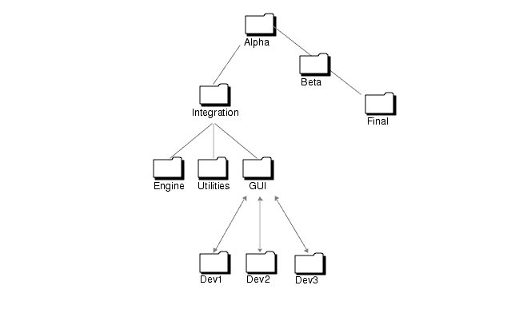

| Sun WorkShop TeamWare User's Guide |
Introduction to Sun WorkShop TeamWare
This chapter provides an overview of Sun WorkShopTM TeamWare. The following topics are discussed:
- What Sun WorkShop TeamWare Does
- Basic Concepts
- Sun WorkShop TeamWare Models
- Working With Sun WorkShop TeamWare
- Sun WorkShop TeamWare Scenarios
In the following chapters, you'll find detailed instructions for using Sun WorkShop TeamWare tools and features.
What Sun WorkShop TeamWare Does
Sun WorkShop TeamWare is a source management product designed for use by a team of people who develop software concurrently. Sun WorkShop TeamWare tools save time and increases your organization's productivity by simplifying source code management. More specifically, Sun WorkShop TeamWare lets you:
- Configure your working directories and subdirectories (or folders) into workspaces to suit the phases of your project and the structure of your team.
- Work on individual versions of the same file, but also ensure that everyone has the latest version in their own individual workspaces.
- Inside a single workspace, lock a file for editing to prevent unmanaged conflicts.
- Inspect and selectively merge versions of a single file that was edited in different workspaces.
- Find and "freeze" a particular version of a workspace, archiving it for later use.
- Build an application for release from selected files and directories--either locally (serially or in parallel) or across distributed systems.
- Automatically notify team members of each action that has been taken on a file.
Sun WorkShop TeamWare's version-control capability is based on an underlying program called SCCS (Source Code Control System). The workspaces you configure with Sun WorkShop TeamWare tools act only upon files that have been placed under SCCS control. If you have files under the RCS source-code control system, they can be migrated to Sun WorkShop TeamWare.
Basic Concepts
If you are a Sun WorkShop TeamWare user, you should understand the development model it is based on, Copy-Modify-Merge. You should also understand the relationships between workspaces, based on the concept of parent and child workspaces. Sun WorkShop TeamWare works only on files under UNIX Source Code Control System (SCCS) version control; you should be familiar with SCCS. Each of these is briefly described in the following sections.
Why Use Sun WorkShop TeamWare?
The hardest part of most large software development projects is coordinating the work of developers who share common and interdependent files.
If developers have private copies of the source code, the changes they make to the source base are difficult to track when all of the code is finally merged. One solution is to allow serial access to the common files, one developer at a time. Unfortunately, when only one programmer at a time has access to the code, a bottleneck occurs.
Sun WorkShop TeamWare supports coordinated parallel development, because it lets you create one or more isolated, private workspaces for each developer. Each developer copies project files from a central workspace into his or her own private workspace, makes changes to files, and then copies those changes back to the central workspace.
Parent and Child Workspaces
Your team does its work in directories (or folders) and files. To gain the advantages of Sun WorkShop TeamWare, place all your working directories in one high-level directory. You then use Sun WorkShop TeamWare to transform that directory hierarchy into a workspace. Sun WorkShop TeamWare uses these tools:
- Configuring - Forms intelligent connections between workspaces that are owned by different Sun WorkShop TeamWare users. Configuring also maintains a history of the workspaces and all of the transactions performed.
- Versioning - Maintains a history of the files and the deltas to each file.
- Merging - Protects against changes to files overwriting each other.
- Freezepointing - Captures a "snapshot" of the workspace.
- Building - Combines files into a working application.
Sun WorkShop TeamWare converts your high-level directory into an intelligent workspace. When you create a new workspace from a copy of a workspace, a special relationship is created between the first workspace and the new copy. The first workspace is considered the parent of the newly created child workspace.
Rather than risk corrupting the master files in the parent workspace, each team member works on copies of those files in his or her own child workspace. Sun WorkShop TeamWare lets team members easily copy directories back and forth between their child workspaces and the parent workspace.
A parent workspace can have many of child workspaces, one or more for each team member. Team members populate their child workspace(s) with the directories and files that they need. A particular child workspace can contain a copy of every directory and every file in the parent workspace, or only a subset of the parent's contents.
In a complex project encompassing many levels, one workspace may be the parent of some workspaces and the child of another workspace.
Source Code Control System (SCCS)
Sun WorkShop TeamWare recognizes only files under the Source Code Control System (SCCS). Each time you check out a file, change it, and check it back in, SCCS keeps track of the changes. The differences between two versions of a file is known as a delta. Sun WorkShop TeamWare manages files based on SCCS deltas. When you edit, move or copy a file, Configuring copies or merges the file's SCCS history file. The way Sun WorkShop TeamWare manipulates and merges SCCS history files is described in How Configuring Merges Files.
See the Solaris Programming Utilities Guide for a description of SCCS.
Sun WorkShop TeamWare Models
The following two models show how Sun WorkShop TeamWare used in organizations:
- The Copy-Modify-Merge model, which is the basic idea behind Sun WorkShop TeamWare
- Sun WorkShop TeamWare's user model for teams and projects--at set-up time and day-to-day
The Copy-Modify-Merge Model
Sun WorkShop TeamWare configuration management tools are based on a concurrent-development model called Copy-Modify-Merge. When you use these tools in your daily work on project files, you iterate this basic pattern:
- Bring over (copy) the latest version of a file or directory from the parent workspace.
- Modify a file from that directory inside your own child workspace.
- Put back that file to the parent workspace. If someone else has worked on another copy of the same file and put it back from his or her own workspace to the parent, you can selectively merge the two sets of changes.
In the following Copy-Modify-Merge example, you see a common software development scenario in which two people are working simultaneously on the same or related parts of a project.
The Team-Project Model
The Copy-Modify-Merge model for an individual user fits into Sun WorkShop TeamWare's larger team-development model for a team. Over the life of a typical large-scale project, your team may need to set up and use a complex project structure and process to reflect your project's shape and schedule. Following is an example of such a structure and process--first, during set-up time, and second, as the day-to-day work continues.
Sun WorkShop TeamWare Environment Setup
In the beginning of a project, before team development starts, the following happens.

- One team member--perhaps a team leader or a system administrator--sets up a group of parent workspaces to house separate phases and divisions of your project, such as:
- Alpha - The workspace where your team's latest files reside
- Integration - The workspace where team leaders combine everyone's work
- Team Workspaces - Each engineering team has their own workspace
- Beta/Final - Different versions of builds based on criteria such as project phase, release, platform, or locale
- Before starting to work on files, each team member sets up his or her own child workspace in relation to the team workspace (Dev1, Dev2, Dev3).
- Each team member brings over from the parent workspace a copy of the directories and files he or she will need to modify.
FIGURE 1-1 Setting up a Typical TeamWare Environment
- Now the team's environment is set up for concurrent development. To continue the example, this team uses their workspace structure as described in the next section.
Day-to-Day Work in a Sun WorkShop TeamWare Environment
- As the members of your development team work on files and directories, and as the team moves through the process of developing an application, they do the following tasks on a regular, iterative basis.
- Team members bring over directories from the team parent workspace to their own child workspaces.
- Each team member must do bringovers frequently. This practice keeps the team's changes freshly propagated throughout their workspaces, a necessity if everyone is to stay up-to-date.
- Team members make changes in their individual child workspaces, and then put back the changed directories to the team parent workspace.
- TeamWare automatically notifies the whole team (or whoever is on the notification list) when changes have been put back.
- Team leaders check the changes that team members have put back. Team leaders then put back those changed directories from the team workspaces to the Integration workspace.
- When notified that the files in the Integration workspace are ready, the buildmaster integrates all the files, builds the application, and puts back the resulting directories to the Alpha workspace.
- When notified that Alpha workspace is ready, the software testers go to that workspace and test the application.
- When the alpha phase of the product is complete, the Beta workspace is created as a child of the Alpha workspace. Then the Integration workspace is reparented to the Beta workspace.
- Periodically, a team member sets aside or archives a particular "snapshot" of a workspace (a freezepoint) for later use. You can then extract a workspace from the freezepoint you created, with all of its contents reflecting that point in time.
Working With Sun WorkShop TeamWare
The following table briefly explains which Sun WorkShop TeamWare tool or feature you use for which kind of task.
Sun WorkShop TeamWare Scenarios
People have different interactions with of Sun WorkShop TeamWare depending on their responsibilities within their projects and teams. Consider the following two scenarios:
Joining an Existing Team
If you are the newest member of a team that has been using Sun WorkShop TeamWare configuration management tools for concurrent software development, and if their workspaces are already set up, you'll need to do the following.
1. Find out the configuration of your team's parent workspace(s).2. Find out your team's policies, processes, and schedules for builds.3. Set up a child workspace for yourself, in which you will do your work.4. Set up email notifications within Sun WorkShop TeamWare.5. Bring over the directories you want from the parent workspace.6. Check out each file to modify it; save it; and check it in again.7. You can also add files to your child workspace and delete files from it. Place any new files under SCCS control.8. When you are finished changing files, put back the whole directory to the parent workspace.9. Your team is automatically notified of the changes you've made.10. If you put back a file that another team member has already changed and put back, you must merge those changes and put the resulting file back to the parent.Setting Up a Sun WorkShop TeamWare Environment
If no Sun WorkShop TeamWare workspaces have been set up, and you are responsible for doing it, you'll need to do the following.
To set up an Sun WorkShop TeamWare environment:
1. Decide how to configure your team's workspaces, based on criteria like the following:
- The project's discrete phases
- The geographical distribution of your team, or the networks and file systems they use
- The platforms on which and for which the application is being developed
- The release structure of your project
2. Create the parent workspace(s) for your project.3. Notify your team of the workspaces you have created so that they can now create their child workspaces.4. Set up and publish agreements within the team for:
- Regular bringovers
- Putbacks
- Periodic cutoffs (such as before weekly builds)
- Periodic putbacks from lower parent workspaces to higher ones
- Periodic builds
- Freezepoints of builds or other milestone-related versions
5. If you are also developing the application along with your team, set up your own child workspace(s) and use Sun WorkShop TeamWare tools on a regular basis as shown in Joining an Existing Team.
|
Sun Microsystems, Inc. Copyright information. All rights reserved. Feedback |
Library | Contents | Previous | Next | Index |